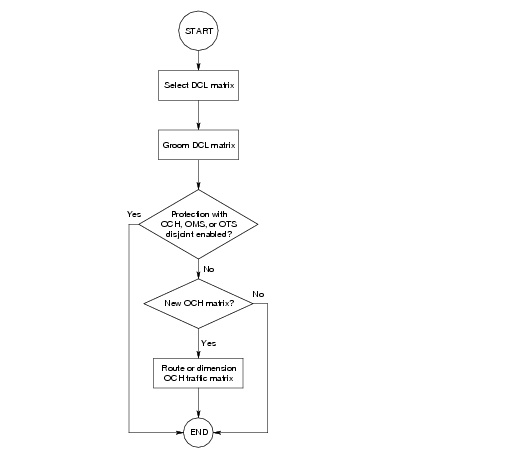

Dimensioning > Strip Capacity > Workflow Description
Grooming DCL to OCH Traffic
A DCL grooming operation maps SONET/SDH traffic demands (a DCL traffic matrix) into optical wavelength demands (an OCH traffic matrix). DCL grooming uses a "top-down" approach to network design, in which DCL traffic demands drive OCH demands. The connections in the resulting OCH matrix form logical DCL links; the network uses these links to route the DCL traffic.
The aim of DCL grooming is to determine a combined network design for the DCL and OCH layers that minimizes the total network cost. The grooming algorithms use the cost parameters you specify (as equipment properties) to ensure that the combined DCL/OCH network design results in the lowest possible network cost. (For more information about the available equipment properties, see Equipment Properties.)
SP Guru Transport Planner supports DCL grooming with optimized routes (defined by the grooming algorithm) and fixed routes (user-defined physical routes).
Workflow Description
Procedure 8-1 describes how to groom DCL traffic matrices. This workflow is shown in Figure 8-1-DCL Grooming Workflow .
Procedure 8-1 Grooming DCL Traffic Matrices
- Choose Design > Groom DCL to OCH Traffic > Optimized Routes to open the Grooming DCL to OCH Traffic dialog box.
- Specify grooming options.
Select the DCL traffic matrices you want to groom, the target bit rate for the OCH traffic matrix, the cost parameters and the grooming algorithm you want to use (for more information, see DCL Grooming Input and Options).
If you select "1 + 1 Protection in DCL", you must specify some additional options. The Link Disjoint setting is an import consideration because it impacts the subsequent workflow, as explained in the following steps.
- Groom the DCL traffic matrices.
After you specify grooming options, click Groom. This determines the logical DCL topology (that is, an OCH matrix) on which to route the DCL connections.
If the grooming operation is finished, SP Guru Transport Planner shows the results in the Grooming Results and Grooming Performance fields on the right (see DCL Grooming Results and Performance for details).
If you selected 1 + 1 Protection in DCL with Link Disjointness down to the OTS, OMS, or OCH layer, the grooming algorithm ensures that working and protection paths of the DCL traffic are disjoint down to the selected layer. To ensure this, the grooming algorithm also determines the routes of the resulting OCH traffic matrix; then it accommodates both the DCL and the resulting OCH traffic matrices in the network.
In all other cases—that is, if you specified grooming with no protection or with 1+1 protection and DCL link disjointness—the grooming algorithm does not set up the OCH traffic matrix, and you might need to do step 4 to accommodate this matrix. This gives you the freedom to decide the routing and protection strategy for the OCH traffic.
- Route or dimension the resulting OCH traffic matrix.
In some cases you can skip this step. There might be enough spare DCL capacity to support the SONET/SDH demand; if so, the resulting OCH traffic matrix is empty.
- To dimension the new OCH traffic matrix, click Dimension in the Groom DCL to OCH Traffic dialog box. This opens the Dimension DCL/OCH Layer dialog box; for more information, see Dimension DCL/OCH Layer Dialog Box.
- To route the new OCH matrix, close the Groom DCL to OCH Traffic dialog box and choose Design > Route DCL/OCH Traffic; for more information, see Route DCL/OCH Traffic Dialog Box.
Note—After the routing or dimensioning or routing operation accommodates the entire OCH traffic matrix in the network, SP Guru Transport Planner automatically accommodates the contained DCL traffic.
End of Procedure 8-1
Figure 8-1 DCL Grooming Workflow

| Home © 1987-2007 OPNET Technologies, Inc. All Rights Reserved. This software may be covered by one or more U.S. Patents. See complete patent notice in the Legal Notices section. OPNET Support Center |